-
- Da
ist ein neues Erwachen am
Horizont!
-
- Der Morgen
eines neuen Jahrhunderts kuendigt neue
Haltungen und Methoden an, die erlauben
werden unseren gegenwaertigen destruktiven
Kurs in Technologie, Landwirtschaft und
Psychologie zu umzukehren.
-
- Stellt
irgendjemand die Notwendigkeit einer
Umkehrung in Frage?
-
- So viele
Warnungen kommen auf uns zu, von diversen
Gesellschaften, Regierungen, Behoerden,
Wissenschaftlern, sie alle warnen uns vor dem
Gebrauch fossiler oder nuklearer Energien,
diese stellen ein unannehmbares Risiko fuer
unser Klima und unsere Umwelt dar, zu nicht
mehr verantwortbaren Kosten.
-
- Die
Beduerfnisse der Menschheit steigen jedoch
staendig. Wenn es also nicht Kohle, nicht Oel
und nicht nukleare Energie ist, was dann?
-
- Wir werden
in diesem Newsletter eine Uebersicht ueber
neue Energiequellen erstellen, welche uns
neue, weitreichende Perspektiven fuer
effiziente, erneuerbare Kraftquellen
aufzeigt.
-
- Diese bieten
uns das Schoepfungsprinzip, mit dem wir
neu-kreieren koennen, Wasser, Luft, Energie
und Wachstum. Wir nennen das eine Neue,
nicht-destruktive Technologie, basierend auf
den Prinzipien der Implosion.
-
- Verbrennungsmaschinen
und alle unsere gegenwaertigen Energiequellen
von denen unsere gegenwaertige Welt abhaengig
ist arbeiten nicht einmal mit einer fuenfzig
prozentigen Effizienz. Wesentlich mehr als
die Haelfte der Energie wird zerstoert oder
verschwendet.
-
- Warum
funcktionieren sie so schlecht?
-
- Bei genauer
Beobachtung der Natur kriegen wir die
Antwort, wir benuetzen die falsche
Bewegung um unsere Arbeit zu
verrichten.
-
- In der Natur
existieren zwei Formen von Bewegung: die eine
loest auf und die andere verfeinert und baut
auf. Beide arbeiten rhytmisch balanziert, in
sich abwechselnder Kooperation
miteinander.
-
- Die Form der
Bewegung die kreiert, entwickelt, reinigt,
und waechst ist die hyperbolische Spirale,
welche aeusserlich zentripedal ist und
innerlich entlang der Laengsachse sich
bewegt. Die destruktive und
auseinanderloesende Form der Energie ist
zentrifugal und bewegt sich entgegen der
Peripherie. Mit der zentrifugalen Bewegung
sind Stoffe zuerst geschwaecht, dann
aufgeloest und abgebaut. Durch Gaehrung und
Verwitterung loest die Natur ihre Vielfalt.
-
- Die
zentripedale Bewegung ist synchron mit
fallenden Temperaturen Zusammenziehung und
Konzentration. Die zentrifugale ist synchron
mit steigenden Temperaturen, Hitze,
Ausdehnung und Explosion.
-
- Es sollte
offensichtlich sein, dass die trauigen
Ergebnisse unserer gegenwaertigen Technik das
Ergebniss des Widerstandes unserer Natur
gegen das einseitige menschliche Streben nach
Explosion, Zerstoerung und Zerfall sind. Die
Ueberhitzungsprobleme unserer Maschinen,
Luftwiderstand, Temperatur und
Schallschwellen, dies alles sind Beweise,
dass der Mensch einen falschen, destruktiven
Weg in seinem technologischen Streben
ergriffen hat.
-
- Die
Turbinen, welche wir von beiden Seiten
zeigen, sind entwickelt worden fuer die
Extraktion mechanischer Energie auf einer
Welle. Die Turbinen auf der Implosionsseite
nennen wir Sogturbine oder Implosionsturbine
(B1).
Die Sogturbine vollfuehrt Arbeit unter dem
Kontraktionsprinzip der Natur; waehrenddessen
die Explosionsturbinen
(B2)
Arbeit unter dem Expansions Druck Prinzip der
Natur vollfuehren.
-
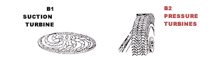 - TOP
-
- Beide
Turbinen sind Reaktoren oder Werkzeuge,
welche Reaktionskraefte freisetzen. Die
Sogturbine, angetrieben durch Luft oder
Wasser, wird zu einem generierenden oder
permanent re-generierenden, synthesizierenden
Geraet. Die Druckturbine, egal ob sie von
Wasser, Luft oder einem anderen bekannten
Antriebsstoff betrieben wird, wird ein
de-generierendes analytisches Geraet. Die
Druckturbinen entleeren sein Medium seiner
vitalen Energie und arbeiten mit geringer
Effizienz, der Grund dafuer ist Hitze und
Widerstand der sich exponentiell mit der
Geschwindigkeit der Rotation erhoet. Die
Maschine als Ganzes istdurch die zeutrifugale
Kraft des Mediums verhiudert,ihte ganze Kraft
Zu erzeugen.. Die Druckturbine nuetzt die
Schwerkraft oder den Expansionsdruck des
Mediums. Diese Turbine produziert PS an
seinem Schaft gemaess der limitierten
Expansions Druck Kapazitaet seines Mediums.
-
- Die
Sogturbine braucht keine Druck Expansions
Kraft oder einen Druckkopf und kann deshalb
innerhalb eines geschlossenen Systems
operieren. Wasserdaemme oder Stauanlagen sind
deshalb nicht noetig. Der Saugkopf hebt
Wasser in sein Leitungssystem, aber er ist
ein eingebauter Teil innerhalb der
Sogturbine. Es ist aus diesem Grund warum der
Rotor von einer externen Kraft angetrieben
wird, mit dem Zweck Sogkraft zu produzieren,
um sein eigenes Nutzwasser zu heben.
-
- Je hoeher
das Drehmoment des Rotor ist, desto mehr Nutz
- Wasser wird gehoben, dies wiederum
resultiert in einem groesseren Kraftausstoss
des Schafts. Das eingesaugte Wasser ist
mechanisch und physikalisch eingerollt,
eingewickelt, geknotet und zusammengewunden
von der Wirkung der Vortex. Die Drehung der
gewundenen Leitungen produziert eine
langgestreckle, zentripedale Kraft, die sich
selbst dadurch ausdrueckt, dass sie in sich
selbst eine Kraft erzeugt, welche nur durch
die Rotationsgeschwindigkeit limitiert
ist.
-
- Vergleiche
den Sogpropeller
(A1)
mit dem
Druck Propeller (A2).
Beide Propeller wurden von Oesterreichern
erfunden. Der Sogpropeller, oder die Schraube
wurde zwischen 1930 und 1940 von Viktor
Schauberger erfunden und der Druckpropeller
von Ressel 1820. Beide haben Modelle ihrer
Maschinen konstruiert. Beide wurden zuerst
von Wissenschaft und Technik abgelehnt.
Schliesslich, nach viel Widerstand, wurde
Ressel's Druck Propeller akzeptiert. Bis
heute ist fast unbekannt, dass Antrieb
genauso durch Druck und Zug erreicht werden
kann.
-
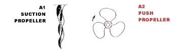 - TOP
-
- Schauberger's
Sogpropeller ist von der Wissenschaft niemals
akzeptiert worden.
-
- Die
Kraefte, die in der Sogturbine wirken, sind
genau die entgegengesetzten wie in der Druck
Turbine. Die Natur bewegt alles durch
Temperatur und Potential Differenzen - neben
dem ueblichen, bekannt als Gravitationszug,
welcher hydraulischen Druck erzeugt. Kraft
ist in ein Vacuum eingeladen, wo kein
Widerstand besteht - im Gegensatz dazu kann
Kraft gezwungen und gedraengt werden, was
aber nur mehr Draengen und Widerstand
hervorruft.
-
- Es ist zu
verstehen, dass bei Implosions Systemen keine
Hitze erzeugt wird und keine Hitze beigefuegt
werden muss, in Explosions Systemen ist alles
Hitze, welche arbeit verrichtet und auch das
Medium zerstoert. Die Sogpropellerleitungen
wirken mit Luft genauso wie mit Wasser und
sind experimentell benutzt worden eine
Levitationsscheibe zu erzeugen, die nur durch
Luft angetrieben wird, siehe
(C1).
Diese Scheiben koennen eines Tages die
energieverbrauchenden, verschmutzenden,
ineffizienten Luftfahrzeuge ersetzen, siehe
(C2).
-
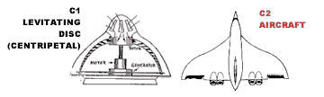 -
- TOP
-
- Lass
uns kurz durch den Hauptzyklus des
Implosionsmotors gehen, wie wir in
(D1)
zeigen. Das Antriebsmedium ist zuerst
spezifisch zentripedal zusammengepresst
(nicht zentrifugal oder hydraulisch) durch
gewundene,eingedrueckte Leitungen und dann
ausgelassen durch spezielle Ausguesse, die
mechanisch mit einem gezahnten Ring reagieren
(jetzt benutzen wir die zentrifugale
Ausdehnung). Der in
(D1)
gezeigte Apparat erlaubt einen kompletten
Zyklus eines fluessigen oder gasfoermigen
Mediums, er 'oszilliert' und vollzieht
molekular und atomar von einem Potential in
das Entgegengesetzte ueberzugehen. Dies alles
geschieht in seiner natuerlichen
metabolischen Bandbreite OHNE zerstoert zu
werden. Waehrend des Wechsels der Potentiale
geschieht die Arbeit des jeweiligen
Antriebsmedium. Dies ist genau, wie es auch
in der Natur geschieht. Der Apparat in
(D2),
der Verbrennungsmotor erlaubt nur den halben
Zyklus, d.h. nur Expansions Druck. Der
regenerierende Zyklus muss konstant mit einem
Medium ersetzt werden, sei es Benzin oder
Oel, welche degeneriert sind, ausgelaugt von
ihrer Energie oder vollkommen in eine andere
Substanz verwandelt, wertlos fuer den selben
Zweck wiederverwendet zu werden.
-
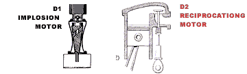 -
- TOP
-
- Implosionsgeraete
nuetzen die zentripedale Bewegung um
Bedingungen mit geringerem Widerstand zu
erzeugen. Der propellerlose Fischmotor wird
eines Tages den schwerfaellig sich bewegenden
Propeller der heutige Schiffe und
Unterseeboote ersetzen, siehe
(E2),
(E3)
und (E4).
Der Fischmotor benuetzt vorneweg Sogkraft, um
den Widerstand zu verringern, der sich sonst
vor dem Geraet aufbauen wuerde, gleichzeitig
wird die Vortexspirale benutzt um wie mit
einem "Keil" den Koerper in das vorgelagerte
Vacuum zu bewegen. In der Natur benutzen
Fische, Wale und anderes Meersleben die
Vortex Prozesse in aehnlicher Art zur
Fortbewegung. Diese Fisch-Motor Geraete sind
geraeuschlos und werden eines Tages den
Unterseebooten dienen.
-
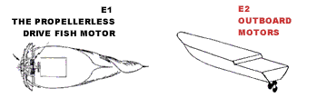 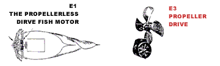 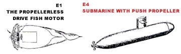 -
- TOP
-
- Implosionsgeraete
werden uns erlauben unsere natuerlichen
Antriebsstoffe zu benuetzen und auch wieder
zu verwenden, wie z.B. Wasser und Luft
anstatt aufwendige,verschmutzende und
destruktive Prozesse, wie Bohren oder
Verbrennen von Kohle, Oel oder Gas. Wir
brauchen keine Daemme mehr, die den
natuerlichen Wasserfluss zerstoeren, die
Qualitaet unseres Wassers dramatisch
verschlechtern, dadurch, dass das Wasser in
die zersetzendenTurbinen der
Hydro-elektrischen Kraftwerke gezwungen
wurde.
-
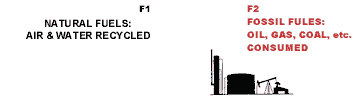 -
- TOP
-
- Die
Implosionstechnologie, mit seiner
Funktionsweise,die auf konstruktiven,
exponentialen Reaktionen beruht ermoeglicht
uns, dass wir Kernkraftwerke
(G2)
ersetzen
mit Implosions Reaktoren
(G1),
die das Mehrfache an Kraft produzieren ohne
Radioaktivitaet oder andere Vergiftungen.
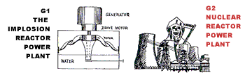 -
- TOP
-
- Die Technik
der Atomspaltung ist eine Beleidigung der
Natur und fuehrt zur totalen Zerstoerung
unserer Gesllschaft und unserer Zukunft. Wir
koennen Atomkraft durch Implosion nutzbar
machen Dies ist der konstruktive Weg, den es
einzuschlagen gilt.
-
- Speziell
entworfene" Drehleitungen" fuer den Transport
mit Wasser (H1)
(und anderen Fluessigkeiten und Gasen)
bewegen das jeweilige Medium in einer Vortex
und sollten die geradlinigen Leitungen
(H2)
ersetzen. In den konventionellen, linearen
Leitungen erfolgt molekulare Desintegration
und damit eine dramatische Verschlechterung
der Wirkkraft des Mediums.
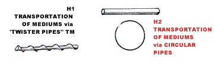 -
- TOP
-
- Eifoermige
Wasserspeicher (I1) sollten die
konventionellen Speicher (I2) ersetzen, weil
die Eiform Wasserzirkulation beguenstigt und
verhindert, dass das aufbewahrte Wasser sich
aufheizt und eine tote, Bakterien
beguenstigende Fluessigkeit
wird.
-
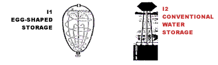
-
- TOP
-
- In
der Zukunft koennen riesige Implosionspumpen
(J1),
die grosse Volumen von Wasser bewaeltigen
ineffiziente Zentrifugalpumpen
(J2)
wie sie
heute benuetzt werden
ersetzen.
-
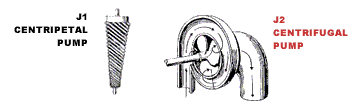
- TOP
-
- Eine
unmittelbare Anwendung der Vortex-Bewegung in
Implosions Geraeten ist die Behandlung,
Reinigung und Trennung von industriellen und
privaten Abwaessern und aller anderen
fluessigen Medien. Abfallbeseitigung und
Wasserbehandlung verschlingen immer
gigantischere Summen.
-
- Abfallhalden
oder "Entsorgungsparks" zu finden kann keine
Loesung sein!
-
- Mit unserer
gegenwaertigen "Reinigungsmethode" werden
immer noch chemische Rueckstaende
uebrigbleiben.Mit Implosionsgeraeten
kann man atomisch und molekular transmutieren
und waehrend des Prozesses in ungefaehrliche
oder nuetzliche Materialien umwandeln.
-
- Durch
Kopierung der zyklischen Vortex-Bewegung,
welches auch die Natur zur Reinigung benutzt,
kann man (schon ueberprueft )chemische
Abfallstoffreinigungsanlagen
betreiben(K2).
-
- Ein
turbulenter Trichter- Wasser Reiniger ist ein
Reinigungs und Separationsgeraet
(K1).
Dieser Trichter, der aus einem grossen
eifoermigen Behaelter besteht, hat
meterlange durchloecherte Leitungen an seinem
Boden angeschlossen. Eine Fluessigkeit,
gefuellt mit Stoffen oder Chemikalien
verschiedenster Dichte kann gereinigt werden
durch den Durchfluss durch eine dergestalte
Leitung.
-
-
- TOP
-
- Die
Feststoffe werden in eifoermigen Formen
koagulieren, sich in der Mitte des Schafts
sammeln und von dort abgeleitet werden. Diese
eifoermigen Feststoffe werden keine
Feuchtigkeit mehr enthalten. Solche Geraete
wirken auch fuer mechanische oder molekulare
Separation, wenn man das Medium einer
kontrollierten Vortex Bewegung
unterwirft.
-
- Durch einen
konstruktiven hyperpolischen Prozess der
Synthese kann man Substanzen mit Implosions
Technologie schaffen, wie Experimente
bewiesen haben. Die Synthese von Wasser-
Kohlenstoff ist bereits erzielt worden.
Niederqualitative Rohmaterialien koennen mit
einem hohen Energiegehalt bereichert werden.
Niedrigwertiges Eisen, Oel oder Kohle koennen
aufgewertet werden, wenn man sie zentripedal
Geraeten aussetzt
(L1).
Sogar "hochpotentesWasser" hat Spuren von
Petroleum in diesen Apparaten erhalten. Wenn
man dieses Wasser in einen Zylinder gesprayt
hat und noch eine bestimmte Menge
natuerlichen Oxygen beigefuegt hat, genuegte
ein leichter Druck, erzeugt durch einen
eingefuehrten Kolben, das hochpotente Wasser
in ein Gas zu verwandeln.
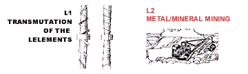 -
- Wir Koennen
uns unsere Antriebsstoffe selbst erzeugen und
damit alle Probleme bezueglich Abholzung,
Minen, Bohrungen e.t.c. loesen.
-
- TOP
-
- Bei
Verschmutzungskontrollgeraeten fuer Kamine
(M1)
und
Kammern fuer die Separation von Gasen von
Fluessigkeiten und von anderen Gasen ist die
Vortex Bewegung schon angewendet worden. Z.B.
gibt es ein Patent zur Separation von
Schwefeldioxid von den Auspuffgasen. Dies
koennte den sauren Regen stoppen, ein Problem
der industriellen Kohlen Verbrennung
(M2).
Alle Auspuffgase bei Autos und
Heitzinstallationen koennten gereinigt
werden. Auch in der Landwirtschaft wird die
Implosionstechnik von Nutzen
sein.
-
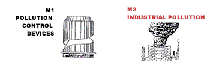 -
- TOP
-
- Landwirte
sind zunehmend konfrontiert mit immer mehr
Pflanzenschaedlingen, dem zunehmenden Verlust
der Bodenfruchtbarkeit und der abnehmenden
Wasserqualitaet - dies alles verursacht durch
unsere gegenwaertige chemische Landwirtschaft
(N2).
Mit Implosions - Technologie koennen wir
kuenstliche Duenger und Pestizide ersetzen.
-
- Chemikalien
sind nicht notwendig, weder fuer Duengung
noch als Insektenvertilgungsmittel, wenn
bestimmte Methoden der Wasser- und
Bodenerdebehandlung gemaess der Vortex
Prinzipien beruecksichtigt werden
(N1).
-
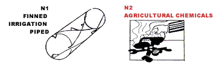 -
- TOP
-
- Mit
dem Gebrauch speziell entwickelter Zusaetze
(O1)
(P1) kann
man konventionelle Pfluege
(O2)
und Eggen(P2)
ausstatten und die Landwirte koennen ihren
Boden mit den Wohltaten der Vortex Prinzipien
behandeln, die auch von den Erdwuermern und
dem Maulwurf genutzt werden. Die Bodenerosion
und die Austrocknung kann reversiert werden.
Fuer jede Tonne Getreide, die ein
amerikanischer Farmer im Jahr produziert
verliert er sechs Tonnen
Ackererde.
-
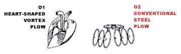 -
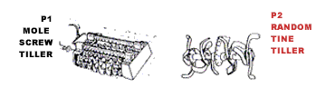 - TOP
-
- Wir sind
nicht hier der Erde ihre Resourcen
wegzunehmen! Diese sind in Fuelle vorhanden
und regenerieren sich in natuerlichen Zyklen.
Wir koennen den Schoepfungsprozess der Natur
nachahmen! Wir sind nicht dazu verdammt die
wertvollen Geschenke wie Wasser, Energie,
Erde und Luft zu rauben und zu vergeuden. Wir
koennen diese vitalen Resourcen, welche die
Natur uns bereithaelt selbst mechanisch
erzeugen. Diese Prinzipien sind in der
Implosion enthalten.
-
- In unserer
Newsletter behandeln wir detailliert alle
Bereiche der Technolgie, der Landwirtschaft,
aber auch Gesundheit und Hygiene,
psychologische und intellektuele Erweiterung,
oekonomische und Geschaeftsfragen.
Implosionsgeraete werden vorgestellt und
technischerlaeutert.
DAS
PRINZIP UND UNSERE ZUKUNFT LIEGT IN DER
IMPLOSION.
|